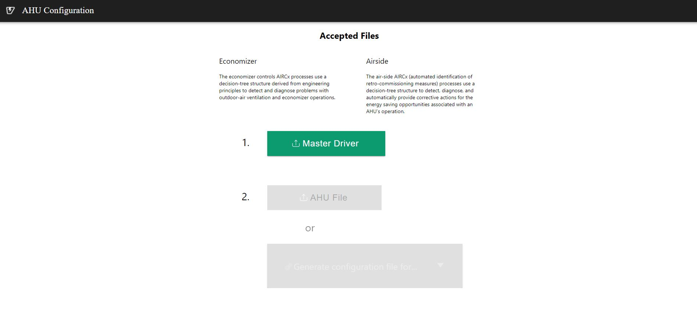
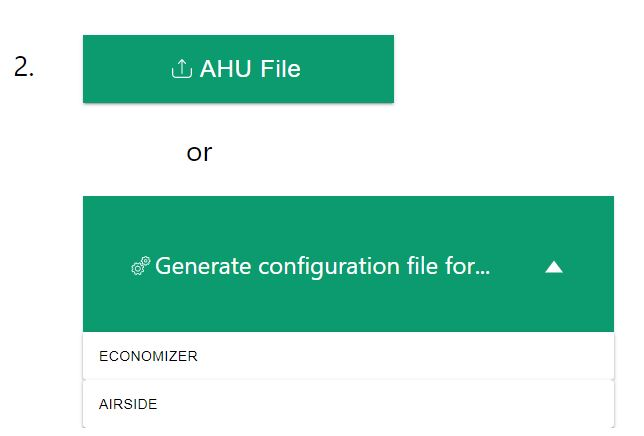
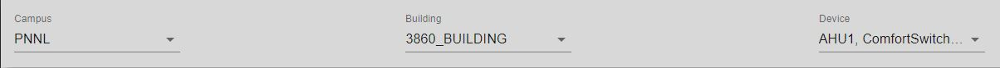

AHU configuration User Guide¶
AHU Application Configuration¶
The AHU Application behavior is controlled through these configuration Pages:
Importing Master Driver Configuration Store¶
At the initial homepage, the user will be prompted to upload the Master Driver file. Values within the Master Driver Configuration Store will be parsed to provide options for Campus, Buidling, Device and Points throughout the application.
Once the user has selected the Master Driver Configuration Store, this homepage will not appear again. However, if the user needs to upload a different Master Driver Configuration Store at any point, this option can be accessed via the Menu icon in the top left of the application.
Warning
Uploading a new Master Driver Configuration Store will remove all current data in the application.

After a Master Driver File is uploaded, there will be two new buttons that will appear as green below.
Below The Master Driver button, there are two buttons that say: AHU File and Generate configuration file for… The Ahu File will allow the user to submit a file that has been created by the AHU config previously, and the Generate configuration file for… will allow the user to create a new configuration file for either the ECONOMIZER or AIRSIDE.
Economizer¶
This section will go over all of the items that are located within the Economizer button located in the Generate configuration file for… button.
When the Economizer is selected there will be a prompt to select Campus, Building, and Device. These will all be selected as dropdown inputs.
